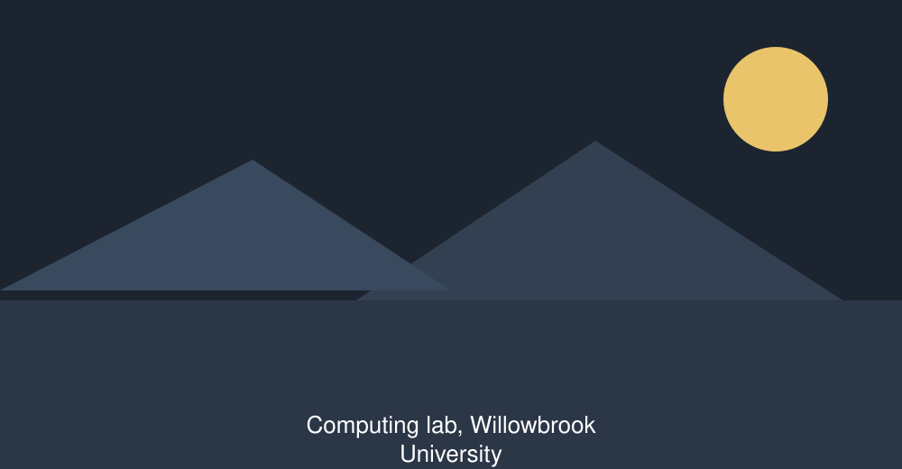
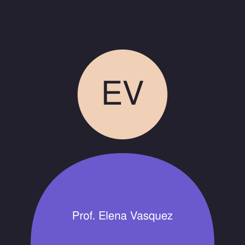

COMP-204 Web Document Structure
Autumn semester 2026, academic year 2026/27.
Course overview
COMP-204 is about the layer of the web that is still there when the styling and the scripting are switched off. Over twelve weeks you will learn to read a document the way a browser, a search engine and a screen reader read it, and to write documents that all three can make sense of.
The course is deliberately narrow. We do not cover layout, animation or frameworks; other courses do that. We spend the whole semester on structure, semantics, forms, tables and accessible media, because in fifteen years of teaching this department has found that these are the things graduates are never taught and always need.
Teaching is two lectures and one supervised lab each week. Nothing on this course is assessed by multiple choice; every piece of work you submit is a document somebody has to be able to read.

Course facts
- Credits
- 6 ECTS, about 150 hours of total student effort.
- Level
- Level 2 undergraduate. Open to exchange students.
- Language of instruction
- English. Written work may be submitted in English or Dutch.
- Contact hours
- Five hours a week for twelve weeks: two lectures, one two-hour lab.
- Mode of delivery
- On campus. Lectures are recorded and captioned; labs are not recorded.
- Examination period
- to . The written examination for this course is on .
- Maximum enrolment
- 72 students, in three lab groups of 24.
Learning outcomes
By the end of the course you will be able to:
- Read an unfamiliar page and describe its document outline from memory.
- Choose between elements on the basis of meaning rather than appearance.
- Mark up tabular data so that every cell can be traced to its headers.
- Build a form that is fully usable with a keyboard and a screen reader.
- Provide text alternatives for images, audio and video that carry the same information as the media.
- Audit a page against WCAG 2.2 level AA and write up the findings for a non-technical client.
- Justify a markup decision in writing, citing the specification.
Weekly timetable
Rooms are in the Ada Building unless stated. Times are local to Willowbrook.
| Time | Lecture Theatre 1 | Lab 2.04 | Lab 2.06 |
|---|---|---|---|
| Monday | |||
| – | Lecture 1: topic of the week | — | — |
| – | — | Drop-in help, no booking needed | — |
| Tuesday | |||
| – | — | Lab group A, supervised. , both slots. | Lab group B, supervised. , both slots. |
| – | — | ||
| Wednesday | |||
| – | Lecture 2: worked example | — | — |
| Thursday | |||
| – | — | Group project workshop, weeks 7 to 12 only. Both labs are opened and the dividing door is unlocked. | |
| Friday | |||
| – | — | Lab group C, supervised | — |
| Week 7 is a reading week: no lectures, labs open for drop-in only. Room changes are announced by email and always confirmed on the department noticeboard by 08:00 on the day. | |||
Syllabus, week by week
Open a week to see the topic, the preparation and anything that is due.
Week 1 — What a document is
The document tree, elements against text, and why the browser builds a structure whether or not you gave it one.
Read: course reader, chapter 1. Nothing due.
Week 2 — Headings and the outline
Heading levels as containment. Reading a page by its outline. Common outline failures in real sites.
Read: course reader, chapter 2. Exercise 1 due Friday.
Week 3 — Landmarks and page regions
Header, navigation, main, complementary content and footer. When a region is a landmark and when it is only a section.
Read: HTML Living Standard, section 4.3. Exercise 2 due Friday.
Week 4 — Text-level semantics
Emphasis against importance, quotations and citations, abbreviations, dates and times, code and keyboard input.
Read: course reader, chapter 3. Exercise 3 due Friday.
Week 5 — Lists and relationships
Ordered, unordered and description lists. Nesting. Why a list of links is still a list.
Read: course reader, chapter 4. Exercise 4 due Friday.
Week 6 — Tabular data
Captions, header cells, scope, row groups, merged cells, and the difference between a table and a layout.
Read: WCAG 2.2 understanding document for success criterion 1.3.1. Exercise 5 due Friday. Structure audit brief released.
Week 7 — Reading week
No lectures. Labs open for drop-in help with the structure audit. The audit is due at the end of the following week.
Due: structure audit, .
Week 8 — Forms, part one
Controls, labels, grouping with fieldsets and legends, and what a placeholder is not.
Read: course reader, chapter 5. Exercise 6 due Friday.
Week 9 — Forms, part two
Input types, validation attributes, error messages that a screen reader announces, and autofill.
Read: course reader, chapter 6. Exercise 7 due Friday. Group project set.
Week 10 — Images and figures
Alternative text as a decision, not a field. Decorative images, complex images, figures and captions.
Read: course reader, chapter 7. Exercise 8 due Friday.
Week 11 — Audio, video and embedded content
Captions, transcripts, text descriptions, multiple sources, and embedding somebody else's document responsibly.
Read: course reader, chapter 8. Exercise 9 due Friday.
Week 12 — Metadata, documents and the outside world
The document head, language, descriptions, canonical addresses, and what search engines and social platforms actually read.
Exercise 10 due Friday. Due: group project, .
Assessment
| Component | What it is | Weight | Due |
|---|---|---|---|
| Weekly exercises | Ten short markup tasks, best eight count | 20% | Fridays, weeks 2 to 12 |
| Structure audit | A 2,000-word audit of a live site, with corrected markup | 25% | |
| Group project | An accessible multi-page document, in groups of three | 25% | |
| Written examination | Two hours, closed book, three questions from five | 30% | |
| Total | Four components | 100% | — |
The pass mark is 50% overall, with at least 40% in the written examination. A student who passes overall but fails the examination component may resit the examination once, in the August period, capped at 50%.
Late work loses five percentage points per working day, up to five days, after which it is not marked. Extensions are granted by the department office, not by the lecturer.
Sample lecture
An excerpt from lecture 4, on text-level semantics, so you can hear how the course is taught before you enrol.
Download the excerpt (M4A, 115 KB)
What is in the excerpt
Prof. Vasquez opens lecture 4 by setting out what the session covers: why a heading describes hierarchy rather than text size, how to read a document outline, a side-by-side comparison of the same page built from generic containers and from landmark elements, and a demonstration in which she walks a real page with a screen reader. The full recording runs for fifty-two minutes and is published with captions in the course workspace.
Official syllabus document
The department publishes the binding version of the syllabus separately. It is embedded below, and it is the version referred to in any dispute about assessment.
Reading list
Required, in this order
- Course reader, Web Document Structure, chapters 1 to 8. Available from the department office and the library reserve shelf.
- HTML Living Standard, sections 4.3 and 4.4. Read the HTML Living Standard on whatwg.org (opens in a new tab)
- Web Content Accessibility Guidelines 2.2, success criteria 1.3.1, 2.4.6 and 3.3.2. Read WCAG 2.2 on w3.org (opens in a new tab)
Recommended
- Vasquez, E. (2024) Reading Other People's Markup. Willowbrook Press.
- Okonjo, A. (2022) Forms Nobody Complains About. Meridian Books.
- The department's own HTML authoring guide, on the intranet.
What students say
I came in thinking this would be the easy course of the semester because it is "just HTML". I have never had so much red ink on a submission, and I have never learned so much from it.
— Student evaluation, 2025/26 cohort
The screen reader demonstration in week 3 changed how I build things. I got a placement partly because I could explain in the interview why my markup was the way it was.
— Student evaluation, 2024/25 cohort
Contact
Course lecturer

Room 4.12, Ada Building
Office hours: Tuesdays to , no appointment needed
Email: e.vasquez@willowbrook.example.edu
Department office
Department of ComputingAda Building, Willowbrook University
Kruislaan 404
1098 SM Amsterdam
Netherlands
Telephone: +31 20 555 000
Email: computing@willowbrook.example.edu